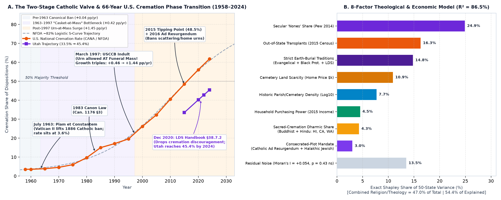
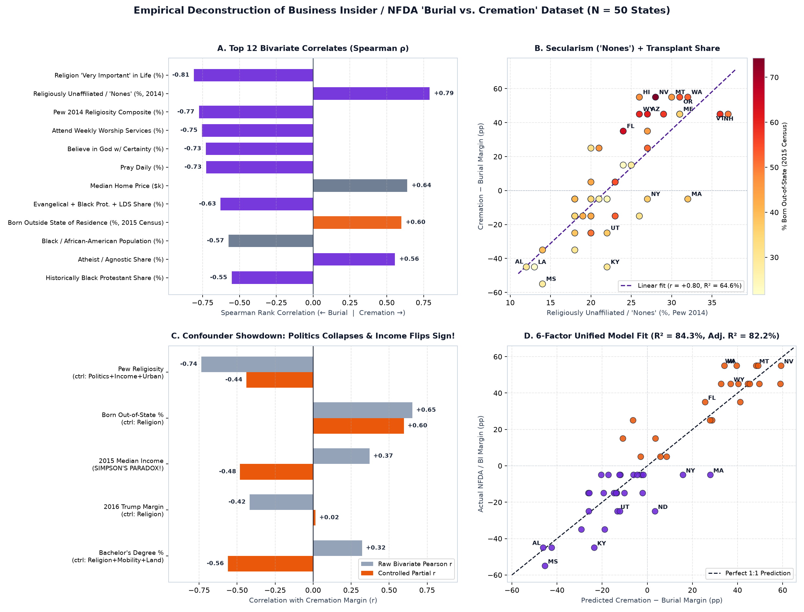
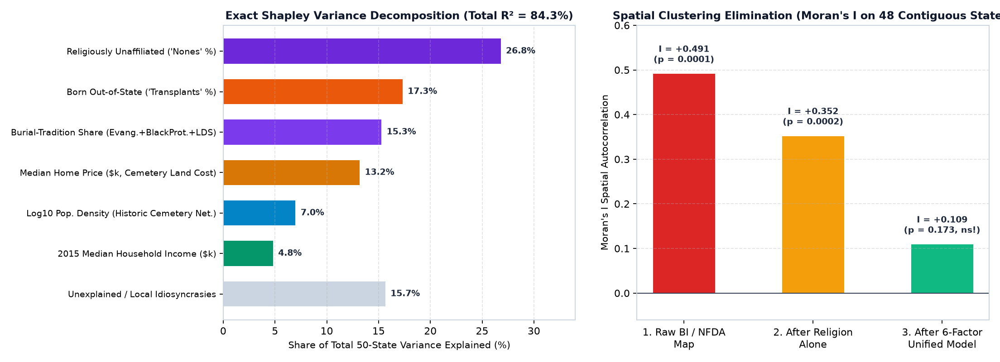
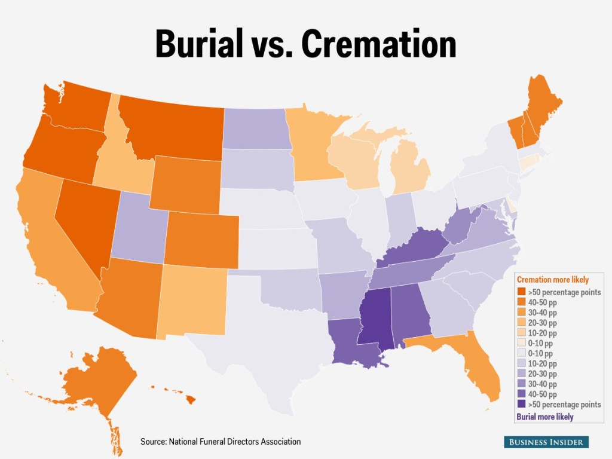

Bivariate Leaderboard (25 Vars)
Ranks #1–#6
Swept by Pew Religion metrics (
q < 10⁻⁸); 'Nones' % alone hits R² = 64.6%
Simpson's Paradox on Income
+0.37 → −0.48
Raw 2015 income flips negative (
p = 0.0007) once Religion + Mobility + Land are held constant
Partisan d-Separation
+0.016 (ns)
2016 Trump margin (
r = -0.42) collapses to zero (p = 0.915) given Religion
8-Factor Unified Model
R² = 86.5%
Spatial clustering Moran's I drops from
+0.491 to +0.054 (p = 0.43 ns)🎓 Everyone Gets to Be the Auditor of Reality — Plain-English Stats Decoder
Open Full Interactive Stats Simulator Lab →New to regression or spatial statistics? Click any badge below to see what the math actually does in plain English—and how pundits get tricked without it:
🧪 Lab 1: Skeptic's Live In-Browser OLS Matrix Sandbox — Check / Uncheck Any Predictors
Runs exact β = (X'X)⁻¹X'y Ordinary Least Squares across all 50 states live in JavaScript. Try the preset experiments below to watch confounders collapse or flip sign in real time!
| Predictor Variable | Raw Slope (b) | Std. Beta (β) | Std. Error | t-Statistic | p-Value | Verdict |
|---|
📊 Lab 2: 50-State Partial Residual Explorer
⏳ Lab 3: 1958–2035 Vatican & LDS Canonical Valves
🖼️ Publication Figures (Click Any Chart to Open Full High-DPI PNG)

Fig 1. The 1963 Piam et constantem vs. March 1997 USCCB Mass Indult structural slope break (+0.46 → +1.44 pp/yr) & 8-factor Shapley shares.

Fig 2. Top 12 Spearman rank correlates, Secularism × Transplant separation, Confounder Showdown, and Predicted vs. Actual fit.

Fig 3. Exact Shapley variance partitioning & contiguous-U.S. Moran's I spatial autocorrelation elimination.

Fig 4. Original Business Insider / NFDA source map (~2015 tipping-point vintage) decoded via exact interior polygon RGB sampling.
🧾 Cryptographic Provenance & Reproducibility Ledger (Sweetbrier Node 1 & Node 2)
| Artifact | Primary Upstream Sources | SHA-256 Digest |
|---|---|---|
data/master_50_states_verified.csv | NFDA/BI Map + Pew 2014 + 2015 U.S. Census ACS (50×32, 0 NaNs) | 711fe0f66db15ed5ea89dcaf98a3f126c86ea3b63d393d38102ab0db483a1623 |
data/cana_nfda_historical_1958_2024.csv | CANA & NFDA Historical Vital Reports (1958–2024) + Vatican/LDS Archives | 79a8da2f5643b357e4e7f21ab2286dcbbf64f4e2c449af395c777638b2843a2a |
data/bivariate_leaderboard_25_vars.csv | Spearman ρ, Pearson r & Benjamini–Hochberg FDR q-values | d8d36b1d0f11b7fcbeec97b58bdf2df986c9eaec95b9cd3610ff88b4da4262b8 |
scripts/reproduce_analysis.py | Standalone zero-network Python/NumPy/SciPy verifier (<1s runtime) | 0554f125e7af8265423eeb6b687f56acbc4ece289d48b38ed9d4bedff1da444e |
📋 Full 50-State Empirical Matrix (Click Any Header to Sort)
| Abbr ↕ | State ↕ | Map Margin ↕ | 8-Fac Pred ↕ | Nones % ↕ | Pew Relig % ↕ | Ev+BP+LDS % ↕ | Cath+Jew % ↕ | Out-of-State % ↕ | Income $k ↕ | Home $k ↕ | Trump '16 ↕ |
|---|